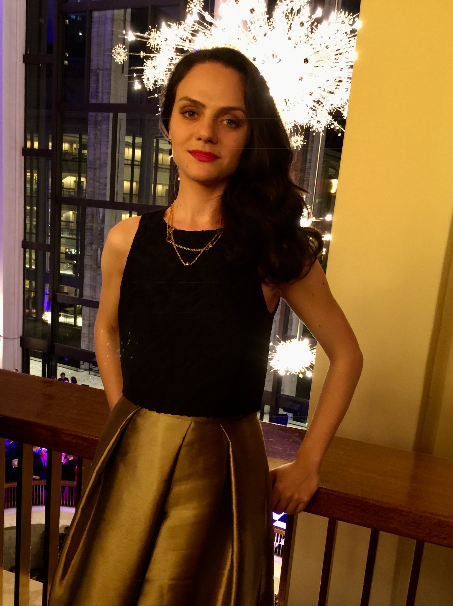

About Me

Hi! Here you can find some information about me. I started to work on my programming skills a few years ago. I started with Coursera Johns Hopkins University programming courses and other sources such as CodePen, CSS-tricks, Codecademy and Stack Overflow, which were really very helpful to find my first job working with markup. It was good experience for me, even though my team was working on Drupal CMS, which made our life harder as we could not upgrade versions of JQuery even. Anyway it was a nice experience but I decided that it is time to move on and improve my coding skills. So I became a UM Coding Boot Camp student.
Well, maybe I should say something about myself. I am from Russia and I like black tea and honey very much. I enjoy dancing, taking ballet classes, practicing my photography skills, swimming in the ocean, traveling and reading books.